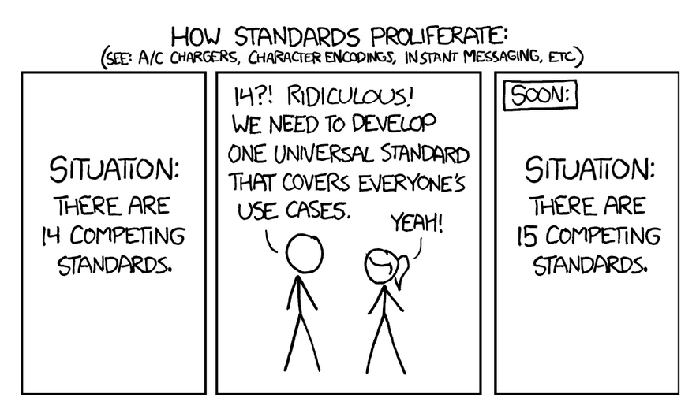
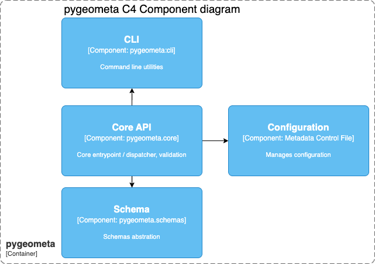
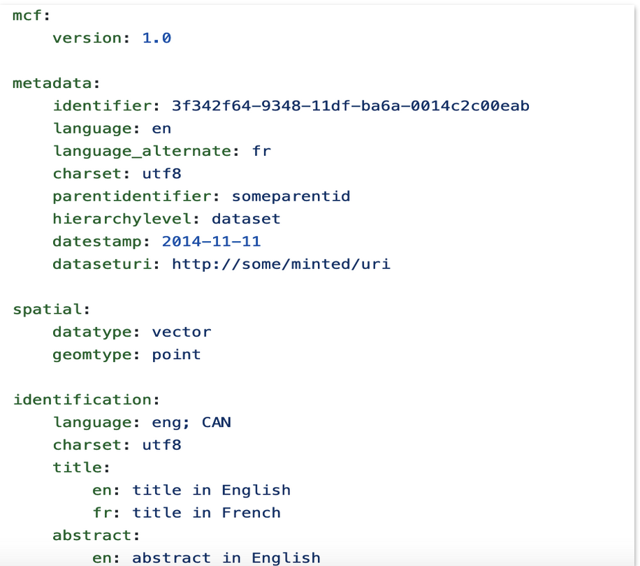
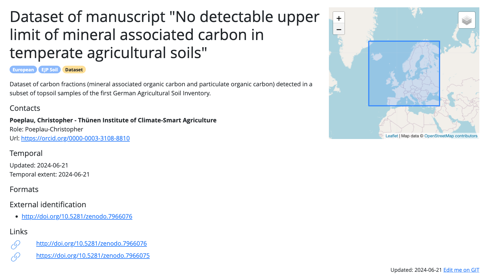
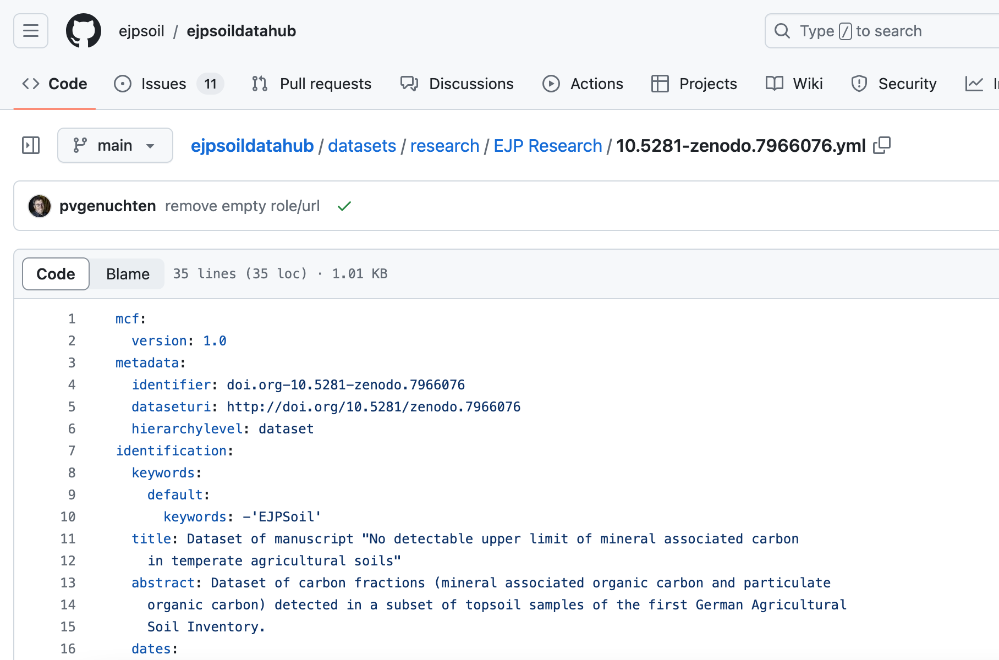
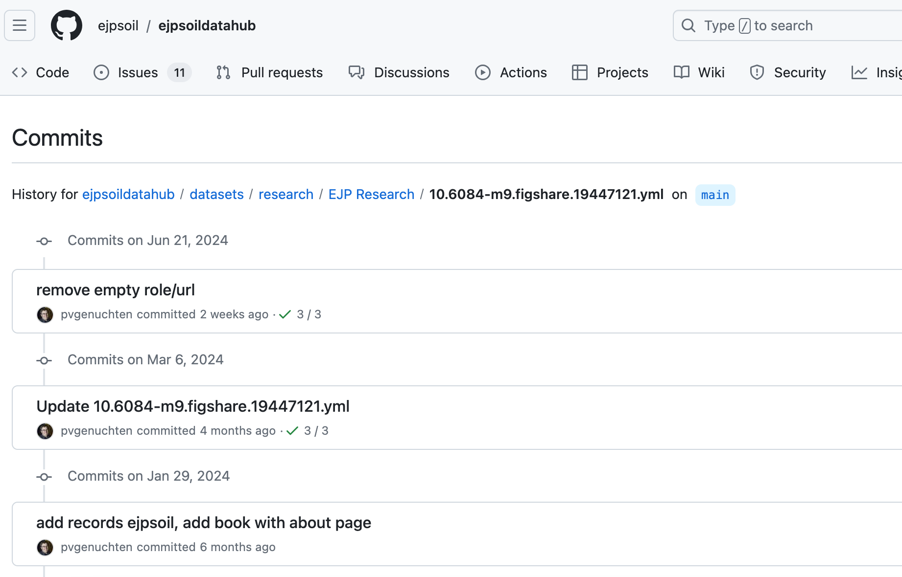
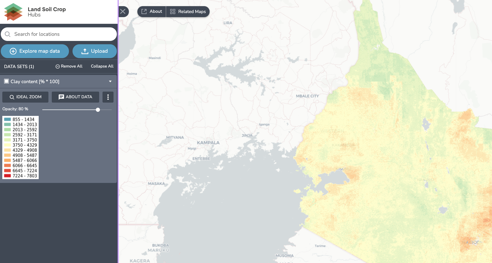
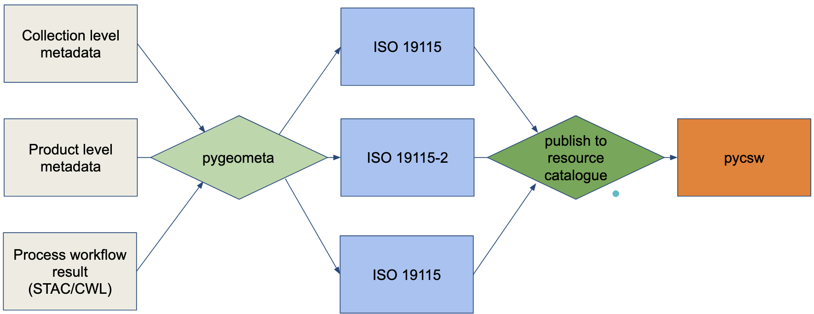
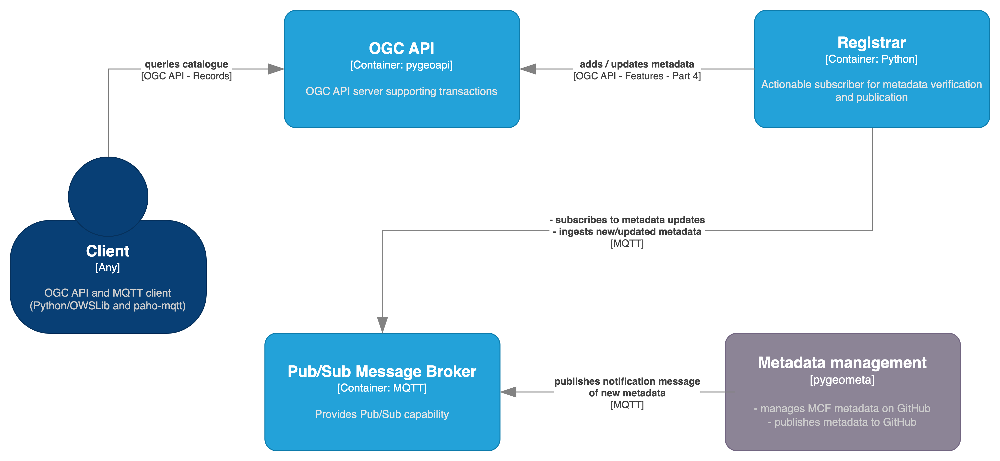
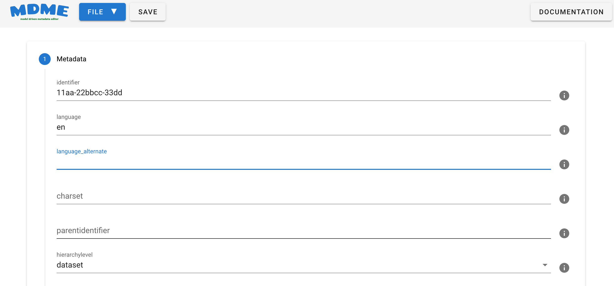

pygeometa project status
Tom Kralidis, Paul van Genuchten
2024-12-06
Geospatial metadata concepts
- Logical models
- Schemas
- Profiles
- Controlled vocabularies
- Representation
- Quality
Geospatial metadata standards
{.fragment width=“100” .fig-align=“left”}
Geospatial metadata standards
- FGDC CSDGM
- NASA DIF
- ISO 19115 / 19139
- WMO, HNAP, etc.
- Dublin Core
- DCAT
- OGC CSW
- OGC API - Records
- STAC
Challenges
- Granularity and organization
- Datasets
- EO domains
- collections / sensors / acquisitions
- stations, observations
- Services
- Processes
- Anything!
- Maintenance Frequency
Workflows
- Data explosion = metadata explosion
- Traditional workflow:
- static discovery metadata
- Real-time workflow:
- Momentum data
- On-the-fly generation
- Ship with or without payload
Intro to pygeometa
- pygeometa is a Python package to generate metadata for geospatial datasets
- metadata control file (MCF) is a format endorsed by the geopython community, defined and maintained as part of the pygeometa library
- YAML encoded subset of ISO 19115
- Supports YAML features such as references and includes
Intro to pygeometa
- Created in 2009
- Originally named “pygdm” as part of larger internal geospatial data management workflow at Environment Canada
- Pulled out as a standalone project (pygeometa) in 2014
- Published to GitHub in 2015
pygeometa overview
- Original focus on static discovery metadata for ISO 19115
- Increased focus on automated workflow and run-time pipelines
- CLI or Python API
- Support additional formats
- Multilingual support
- Support for ‘base’ MCF reuse (i.e. contacts)
- Schema validation (new!)
- Extensible
- allows for additional properties
- add your own Metadata Formats!!
Architecture

The Metadata Control File (MCF)
{.fragment width=“100” .fig-align=“left”}
The Metadata Control File (MCF)
- Agnostic to any metadata format (abstract model)
- Plain old YAML
- migrated from
.iniformat in 0.2 - Multilingual support for text-based properties
The Metadata Control File (MCF)
- Benefits from YAML features (anchors, references)
- Defined by a JSON schema
- model driven metadata workflow
- UIs
- in memory pipelines
- Optimal for CI/CD and Git workflows (edit/publish)
Supported formats
- Dataset metadata
- ISO 19115 / 19139 (rw)
- ISO 19115-2 (w)
- WMO Core Metadata Profile
- OGC API - Records (w)
- DCAT (w)
- Granule metadata
- STAC (w)
- Observing Station metadata
- WMO WIGOS Metadata Standard (w)
Formats and extensibility
- Can be any format/representation
- extending
pygeometa.schemas.base.BaseOutputSchema - Generation is encapsulated
- XML: Jinja2
- JSON: Python
json
Metadata publication use cases
We present 3 use cases to demonstrate the value of this approach:
- Land Soil Crop Hubs
- EOEPCA
- WMO Information System (WIS2)
Land Soil Crop Hubs
- An EU funded research project to improve data sharing in the Land Soil Crop domain in East Africa
- Share resources which are relevant to agriculture in East Africa
Participatory metadata management
- Users initially provided metadata as lists in Microsoft Excel
- Metadata is hosted in GitHub
- Users contribute content (or register issues about content)
- Metadata is published to pycsw
- users can “edit me” from pycsw/OGC API - Records via GitHub
Participatory metadata management



MCF for MapServer configuration
- Use the metadata to generate MapServer mapfile configuration
- Add the generated map endpoint to the metadata
- MapServer is fully aligned with the catalogue
TerriaJS, a web-based GIS
- The project uses TerriaJS as a data viewer
- TerriaJS includes a CSW Catalogue search and links back to the catalogue via WMS capabilities
- Extra integration via ‘Add data to viewer’ from catalogue page
TerriaJS
TerriaJS
EOEPCA
- Earth Observation Exploitation Platform Common Architecture (EOEPCA)
- Resource Catalogue (publishing, discovery and search)
- Metadata publishing pipeline
- Collection level metadata
- Product level metadata
- Process metadata
- ISO 19115-2
- Sentinel scene metadata + INSPIRE => 19115-2
- CWL => 19115-2
- Publishing into pycsw
- CSW
- OGC API - Records
- STAC
EOEPCA
EOEPCA metadata workflows
WMO Information System (WIS2)
- WMO WIS2 is a next generation data exchange system for Earth system data (weather/climate/water)
- Event driven (Pub/Sub, MQTT), driven by OGC API - Records metadata and publication
- Set of tools adopted by regional weather offices to build up a global system
Workflow
“No code”: Manage, verify and publish metadata using GitHub as a content management platform.
- Metadata files are managed as pygeometa MCF records
- GitHub Actions are used to verify, transform and publish notification messages to an MQTT broker
- From here, a metadata registrar is subscribed to the same MQTT broker and, on notification, verifies new/updated metadata and publishes to an OGC API - Records endpoint (powered by pygeoapi) using OGC API - Features - Part 4. The QGIS desktop application is then used to query the OGC API - Records endpoint using its MetaSearch search client
Workflow

MDME, web editor for MCF
mdme
Takeaways
- MCF is an interesting and useful metadata format for embedded metadata in local file repositories
- Git storage and CI-CD workflows are a traceable, reproducible and participatory approach for metadata management
- OGC API - Records (in for example pycsw) offers a clean machine and human friendly interface to metadata
Composability